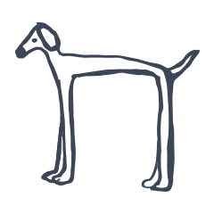
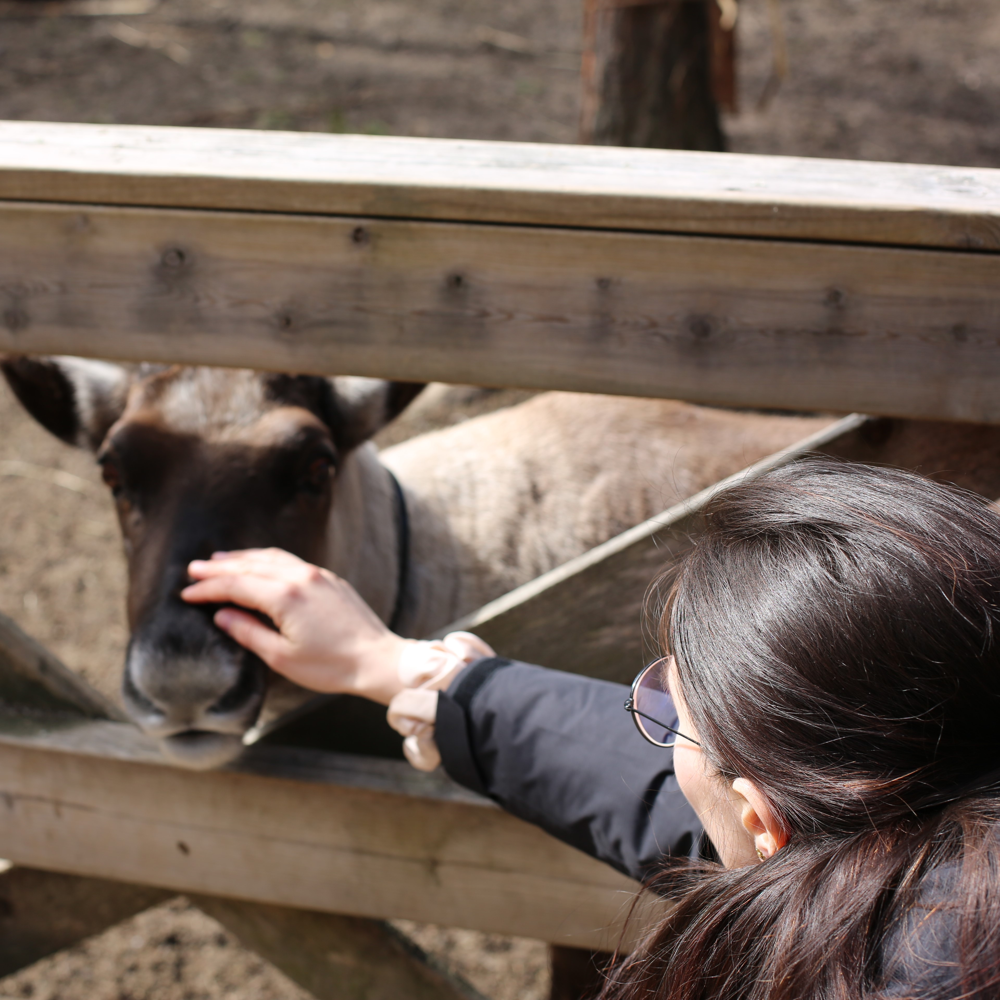
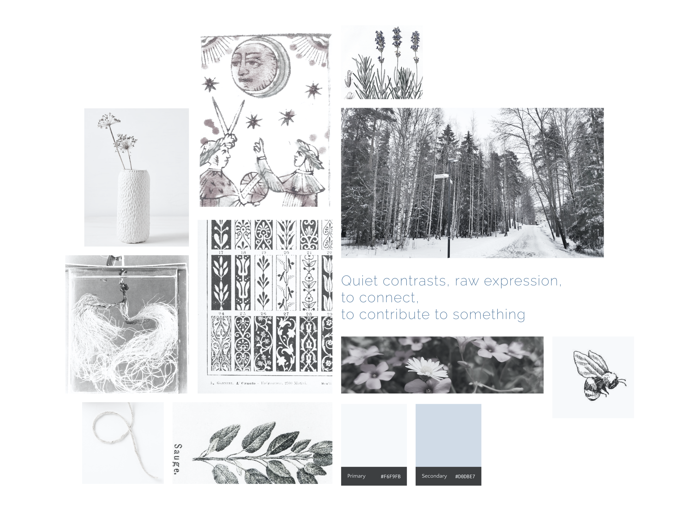

Vanessa Bonanno
born December 1996
based in San Daniele, UD, Italy
vanessa.bonanno2@gmail.com
Career
Product designer
January 2024 - ongoing
SMC Treviso, UD, Italy
UI/UX & Accessibility. Creating tailored web and mobile platforms for banking and public administration. Specialist in WCAG audits and User-Centered design, focusing on accessible, usable, and intuitive digital experiences.
Research assistant
July 2023 - December 2023
CNR - ISPC (Istituto di Scienze del Patrimonio Culturale), FI, Italy
Research Fellow - User Design and Analysis of color-related collaborative virtual experiences aimed at strengthening social cohesion and cultural heritage stewardship.
I co-authored "Chromatic Visions": Colour Perception Beyond Visual Stimuli; Designing Coloured Experiences; Sense of Care in the Design of Digital Heritage Applications; Extending Civic Participation Through Social Cohesion
Research assistant
March - May 2022
Aalto University, Helsinki, Finland
Research Assistant for the SPICE, in collaboration with Aalto University and Design Museum Helsinki. I contributed to the design and development of a VR Pop-up Museum, focusing on the LiDAR 3D scanning of museum collections for virtual prototyping. My work also involved ontology development and metadata management for digital heritage assets.
More info about the project: Aalto Medialab; Pop-up-VR Museum paper by L. Díaz-Kommonen
Intern at recording studio
May - June 2019
Arte e Suono, UD, Italy
Tracking the music creation process, microphone placement and testing before recording, Adobe Pro Tools setup, audio mastering sessions and editing, collaboration with musicians.
I had the privilege of interning at Stefano Amerio’s studio during the recording of Suite Dreams by Naomi Berrill, an exceptionally talented and sophisticated Irish multi-instrumentalist and vocalist.
Ice cream maker
2015 - 2022
Gelateria Artigianale Artefredda, UD, Italy
Customer relationship, service and counter assistance, ice cream preparation and sales, warehouse support and stock management, cashier operations, independent work organization and task management, operation of ice cream production machinery (e.g., ice cream pasteurizer), teamwork. Passate a trovarci!
Studies
Master Degree in Digital Humanities and Digital Knowledge
2020 - 2023
University of Bologna, Italy
LM-43 - 2nd level degree in Computer Science for Humanities. International program intersecting web technologies, semantic web, data science, and digital cultural heritage. Core skills: info architecture, UX/UI design, Python programming, metadata standards, and computational linguistics.
Read my research paper or discover Brancacci POV project.
Bachelor Degree in Multimedia science and Technology
2016 - 2020
University of Udine, Italy
L-31 - 1st level degree in Computer Science. Comprehensive training in software development, sound and music computing, video shooting and editing, digital content management & videogame dev in Solar2D. You should experience "Coincidentally".
My interdisciplinary thesis Il progressive rock in Italia: storia, analisi e organologia elettronica di Per un amico explores the legacy of PFM through a multi-layered analysis of "Per un Amico", combining historical research, musicological study, and digital sound synthesis developed in CSound.
Foreign languages Diploma
2010 - 2015
ESABAC - C. Percoto high school, UD, Italy
Double degree in Italian and French (Baccalauréat)

